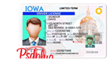

515 Morrill Rd, Ames, IA 50011
 学生卡的办理位于学校的Beardshear Hall。初次办理免费，补办需要交费$15。
学生卡的办理位于学校的Beardshear Hall。初次办理免费，补办需要交费$15。
学生卡在Ames使用频率非常高，图书馆、健身房、医务室均需要刷卡使用。使用学生卡还可以免费乘坐公交车，非常便利。

3708 Lincoln Way, Ames, IA 50014
Iowa州的驾照考试分为笔试和路考两部分，均需在官网https://iowadot.gov/预约。
笔试题目共35道，随机抽取25题后，需要答对20道以上以此获得Permit。考试当天需携带I20表、护照、两封证明住址的信件、眼镜（如有）。
通过笔试后即可预约路考，路考当天需携带I20、护照、Permit、汽车保险单和注册单、眼镜（如有），按照考官要求驾驶。通过后一周左右即可收到驾照。
3708 Lincoln Way, Ames, IA 50014
Iowa州的驾照考试分为笔试和路考两部分，均需在官网https://iowadot.gov/预约。
笔试题目共35道，随机抽取25题后，需要答对20道以上以此获得Permit。考试当天需携带I20表、护照、两封证明住址的信件、眼镜（如有）。
通过笔试后即可预约路考，路考当天需携带I20、护照、Permit、汽车保险单和注册单、眼镜（如有），按照考官要求驾驶。通过后一周左右即可收到驾照。
119 Stanton Ave STE 101, Ames, IA 50014
留学生会面对护照换发的问题，在按照大使馆要求上传资料且审核通过后，需要到邮局邮寄旧护照至大使馆。
Iowa州属于芝加哥领事馆管辖范畴，相关问题可以访问芝加哥领事馆网站。http://chicago.china-consulate.gov.cn/eng/